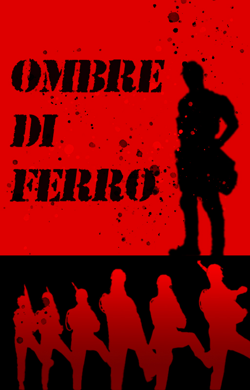

Ombre di Ferro
Aedrian è un soldato che ha sempre potuto fare affidamento sul suo sesto senso per evitare il pericolo, ma quando la guerra lo trascina in un'imboscata sanguinosa, scopre che il vero nemico non è solo umano. Tra le ombre e i mostri che minacciano la sua realtà, Aedrian si trova costretto a fare i conti con il dolore del passato e con una verità terribile: la guerra non si combatte solo sul campo di battaglia. Un racconto intenso di coraggio e confronto con l'oscurità.
La trovi qui gratuitamente